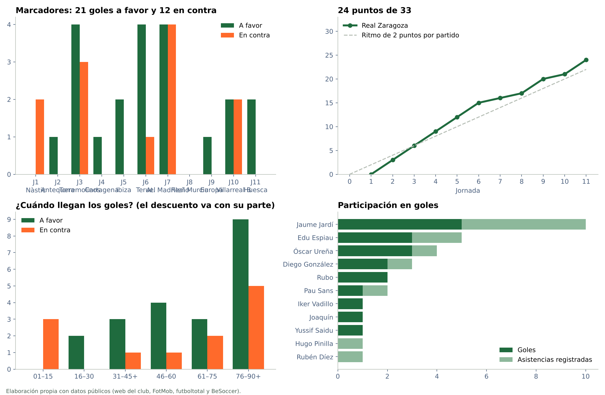
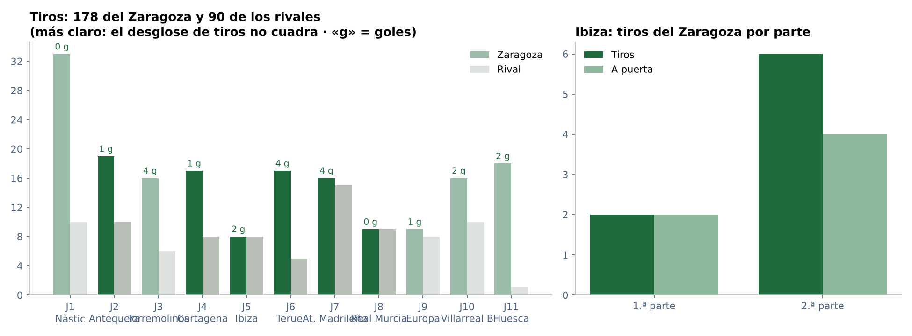
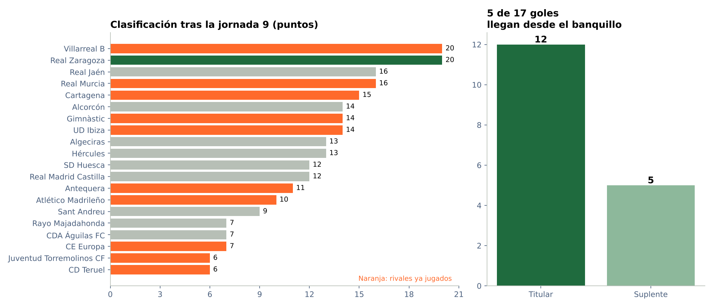
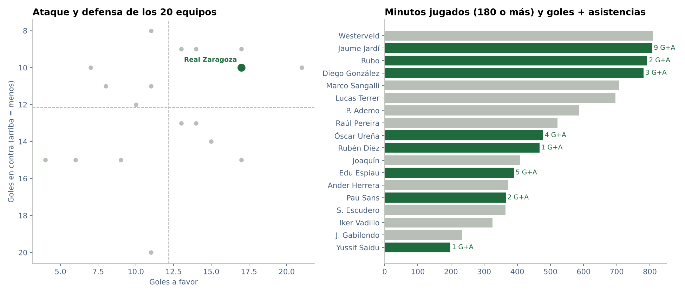

Proyectos / Real Zaragoza 2026/27 / Informe completo

Informe completo · Primera Federación, grupo 2
Real Zaragoza 2026/27 tras la jornada 11
Datos de los 11 partidos de liga jugados hasta el 7 de noviembre de 2026. Todo sale de fuentes públicas, contrastadas entre sí.
Conclusiones
Qué dicen los datos
24 puntos en once jornadas. El 2-0 ante la SD Huesca deja al Real Zaragoza con siete victorias, tres empates y una derrota: 2,18 puntos por partido. Tras la J11 es primero, con dos puntos más que el Villarreal B, que empató el domingo ante el Juventud Torremolinos (1-1).
Dos goles tras dos pérdidas. Joaquín abrió el marcador en el 23', después de que Jardí recuperara un balón perdido por Kembo en la salida y le dejara solo ante Gazzaniga. Vadillo hizo el 2-0 en el 50', también tras robar en la salida de balón del Huesca. Diego Gómez fue expulsado por doble amarilla en el 67'.
En casa y fuera. En casa suma 13 puntos de 15, con diez goles a favor y tres en contra y tres porterías a cero. Fuera lleva 11 puntos en seis encuentros, con un balance de 11-9. El total queda en 21 goles a favor y 12 en contra, con seis porterías a cero.
Un remate del rival. La ficha del club da 18 tiros del Zaragoza, ocho a puerta, por uno del Huesca, sin ninguno entre los palos; es el registro más bajo de un rival esta temporada. La posesión fue del 54 %. Es una ficha incompleta (el desglose de tiros no suma el total y otras métricas aparecen a cero) y no hay xG de Sofascore de esta jornada. En los once encuentros acumula 178 tiros frente a 90.
Jardí, en diez goles. Con el pase del 1-0 suma cinco tantos y cinco asistencias en liga: participa en diez de los 21 goles del equipo.
El siguiente rival de liga es el Real Jaén. El partido se juega en La Victoria el sábado 14 de noviembre a las 21:00. El Jaén perdió 4-3 en Alcorcón en la J11 y suma 19 puntos, con cinco victorias, cuatro empates y dos derrotas. La muestra sigue siendo pequeña y no convierte la previa en un pronóstico.
Grupo 2. Las estadísticas avanzadas siguen con la jornada 8 completa: 80 partidos, 79 con xG (77 de Sofascore y dos de fuentes complementarias cuyo modelo no está confirmado). Las jornadas 9 a 11 se incorporarán cuando sus estadísticas puedan consultarse.
Gráficos
Resultados y goles
Cómo se lee el resumen

Los marcadores y la línea de puntos sitúan los resultados; el reparto de goles y las participaciones completan la lectura. Son cuatro perspectivas de la misma temporada. Juntas permiten plantear preguntas, aunque nueve partidos todavía no bastan para extraer conclusiones definitivas.
Tiros
Qué muestran los remates

La comparación de los tiros por jornada muestra el volumen de remates de ambos equipos. Es una medida de volumen: un disparo lejano y un remate a un metro de la portería cuentan igual aquí. Las barras más claras avisan de discrepancias entre fuentes en J1 y J3.
Clasificación y banquillo
La clasificación y el papel del banquillo

La clasificación sitúa los puntos del Zaragoza frente al resto. La otra gráfica separa los goles de titulares y de jugadores que entraron después. El reparto muestra de dónde vienen los goles, aunque por sí solo no permite saber si los cambios mejoraron el juego.
El grupo y la plantilla
El equipo en su liga y sus jugadores

A la izquierda, la gráfica compara los goles a favor y en contra de los equipos. A la derecha, muestra quién acumula minutos en el Zaragoza; solo aparecen quienes llegan a 180. Una barra larga habla de continuidad, no de la calidad de su rendimiento.
Tablas
Goles a favor
| J | Rival | Min. | Goleador | Asistencia | Rol | Penalti | P. p. |
|---|---|---|---|---|---|---|---|
| 2 | Antequera CF | 90+1 | Edu Espiau | — | Suplente | — | — |
| 3 | Juventud Torremolinos CF | 35 | Javi Cuenca | — | — | — | Sí |
| 3 | Juventud Torremolinos CF | 38 | Diego González | Jaume Jardí | Titular | — | — |
| 3 | Juventud Torremolinos CF | 65 | Jaume Jardí | — | Titular | — | — |
| 3 | Juventud Torremolinos CF | 81 | Yussif Saidu | Jaume Jardí | Suplente | — | — |
| 4 | FC Cartagena | 51 | Jaume Jardí | Óscar Ureña | Titular | — | — |
| 5 | UD Ibiza | 59 | Óscar Ureña | Edu Espiau | Suplente | — | — |
| 5 | UD Ibiza | 62 | Óscar Ureña | — | Suplente | — | — |
| 6 | CD Teruel | 45+7 | Óscar Ureña | — | Titular | — | — |
| 6 | CD Teruel | 47 | Edu Espiau | Diego González | Titular | — | — |
| 6 | CD Teruel | 77 | Pau Sans | Jaume Jardí | Suplente | — | — |
| 6 | CD Teruel | 85 | Jaume Jardí | Hugo Pinilla | Titular | — | — |
| 7 | Atlético Madrileño | 24 | Edu Espiau | Rubén Díez | Titular | — | — |
| 7 | Atlético Madrileño | 68 | Rubo | Edu Espiau | Titular | — | — |
| 7 | Atlético Madrileño | 90+9 | Rubo | Jaume Jardí | Titular | — | — |
| 7 | Atlético Madrileño | 90+12 | Jaume Jardí | — | Titular | Sí | — |
| 9 | CE Europa | 80 | Álex Cano | — | — | — | Sí |
| 10 | Villarreal B | 86 | Jaume Jardí | — | Titular | — | — |
| 10 | Villarreal B | 90+3 | Diego González | Pau Sans | Titular | — | — |
| 11 | SD Huesca | 23 | Joaquín | Jaume Jardí | Titular | — | — |
| 11 | SD Huesca | 50 | Iker Vadillo | — | Titular | — | — |
«Suplente» quiere decir que el goleador había entrado desde el banquillo. Las asistencias son las que recoge futboltotal, que no las apunta todas.
Minutos de la plantilla
| Jugador | PJ | Titular | Minutos | Goles | Asist. | G+A por 90 |
|---|---|---|---|---|---|---|
| Westerveld | 10 | 10 | 900 | 0 | 0 | 0 |
| Rubo | 10 | 10 | 882 | 2 | 0 | 0,20 |
| Jaume Jardí | 11 | 10 | 877 | 5 | 5 | 1,03 |
| Diego González | 10 | 10 | 871 | 2 | 1 | 0,31 |
| Marco Sangalli | 10 | 8 | 798 | 0 | 0 | 0 |
| Lucas Terrer | 9 | 8 | 696 | 0 | 0 | 0 |
| P. Ademo | 9 | 8 | 676 | 0 | 0 | 0 |
| Rubén Díez | 9 | 7 | 546 | 0 | 1 | 0,16 |
| Raúl Pereira | 8 | 5 | 521 | 0 | 0 | 0 |
| Óscar Ureña | 10 | 6 | 489 | 3 | 1 | 0,74 |
| Joaquín | 9 | 4 | 488 | 1 | 0 | 0,18 |
| S. Escudero | 8 | 7 | 422 | 0 | 0 | 0 |
| Edu Espiau | 8 | 5 | 401 | 3 | 2 | 1,12 |
| Pau Sans | 10 | 3 | 398 | 1 | 1 | 0,45 |
| Iker Vadillo | 7 | 5 | 382 | 1 | 0 | 0,24 |
| Ander Herrera | 6 | 5 | 372 | 0 | 0 | 0 |
| Yussif Saidu | 8 | 2 | 288 | 1 | 0 | 0,31 |
| J. Gabilondo | 5 | 3 | 265 | 0 | 0 | 0 |
Jugadores con 180 minutos o más. Los minutos no cuentan el descuento: un titular que juega todo el partido suma 90.
Casa y fuera
| Sede | PJ | Puntos | GF | GC | Porterías a cero | Puntos por partido |
|---|---|---|---|---|---|---|
| Casa | 5 | 13 | 10 | 3 | 3 | 2,60 |
| Fuera | 6 | 11 | 11 | 9 | 3 | 1,83 |
Clasificación tras la jornada 11
| # | Equipo | PJ | G | E | P | GF | GC | DG | Pts |
|---|---|---|---|---|---|---|---|---|---|
| 1 | Real Zaragoza | 11 | 7 | 3 | 1 | 21 | 12 | 9 | 24 |
| 2 | Villarreal B | 11 | 6 | 4 | 1 | 24 | 13 | 11 | 22 |
| 3 | Real Murcia | 11 | 6 | 2 | 3 | 13 | 9 | 4 | 20 |
| 4 | Real Jaén | 11 | 5 | 4 | 2 | 19 | 15 | 4 | 19 |
| 5 | Alcorcón | 11 | 4 | 6 | 1 | 22 | 13 | 9 | 18 |
| 6 | UD Ibiza | 11 | 5 | 3 | 3 | 18 | 14 | 4 | 18 |
| 7 | Hércules | 11 | 5 | 2 | 4 | 12 | 13 | -1 | 17 |
| 8 | Cartagena | 11 | 4 | 4 | 3 | 16 | 13 | 3 | 16 |
| 9 | Real Madrid Castilla | 11 | 4 | 4 | 3 | 15 | 13 | 2 | 16 |
| 10 | SD Huesca | 11 | 3 | 6 | 2 | 13 | 13 | 0 | 15 |
| 11 | Gimnàstic | 11 | 4 | 3 | 4 | 16 | 17 | -1 | 15 |
| 12 | Antequera | 11 | 3 | 5 | 3 | 17 | 15 | 2 | 14 |
| 13 | Algeciras | 11 | 4 | 2 | 5 | 16 | 17 | -1 | 14 |
| 14 | Sant Andreu | 11 | 3 | 4 | 4 | 14 | 14 | 0 | 13 |
| 15 | Atlético Madrileño | 11 | 2 | 5 | 4 | 20 | 19 | 1 | 11 |
| 16 | CE Europa | 11 | 3 | 1 | 7 | 9 | 20 | -11 | 10 |
| 17 | CDA Águilas FC | 11 | 1 | 6 | 4 | 10 | 16 | -6 | 9 |
| 18 | Juventud Torremolinos CF | 11 | 1 | 5 | 5 | 12 | 21 | -9 | 8 |
| 19 | Rayo Majadahonda | 11 | 2 | 1 | 8 | 8 | 15 | -7 | 7 |
| 20 | CD Teruel | 11 | 1 | 4 | 6 | 5 | 18 | -13 | 7 |
Calidad de los datos
Incidencias y decisiones
Cuando dos fuentes no coinciden, lo apunto aquí junto con el dato que me quedo. Un dato que no encuentro queda vacío: nunca lo convierto en un cero.
| Partido | Dato | Problema | Qué hago |
|---|---|---|---|
| General | Cobertura | No hay datos públicos fiables de coordenadas, tracking, distancias, velocidades ni PPDA | No se estiman ni se rellenan |
| General | Nombres | Cada fuente escribe los nombres a su manera: iniciales, apodos («Jamelli» es Rubén Díez y «J. Delgado» es Joaquín) | Uso siempre el nombre de la web del club |
| General | Asistencias | Solo futboltotal las recoge y faltan en las jornadas 1 y 2 y en algún gol suelto | Las trato como un mínimo, no como el total real |
| General | Agregados FootyStats | Sus tablas y su texto no coinciden en tiros ni en xG | No los uso |
| J1 | Minuto gol Carlos Segura | 87 en FotMob; 86 en futboltotal y FootyStats | Dejo el 87; no cambia el tramo |
| J1 | Tiros | El club da 33 tiros, pero 9 a puerta y 16 fuera suman 25 y no publica los bloqueados | Uso el total con aviso y no calculo la precisión de tiro de ese partido |
| J1 | Minutos de los cambios | Club 55/71/82; futboltotal 56/72/82-83 | Uso los minutos del club |
| J2 | Fecha | La URL de futboltotal dice 06/09 y la ficha dice 5/09 a las 21:00 | Dejo el 5/09 (FotMob y la propia ficha) |
| J2 | Pases | BeSoccer 510/256 y 452/181 completados; web del club 510/257 y 453/183 | Cada cálculo sale de una sola fuente |
| J2 | Paradas | Una parada con dos tiros a puerta del rival y ningún gol encajado | No uso las paradas |
| J2 | Penalti fallado | El Antequera falla un penalti en el 71 (futboltotal) | Lo anoto como contexto |
| J3 | Alineación | La web del club no publica la ficha. Sport Aragón publica el once; sus cinco cambios coinciden con futboltotal y LaLiga. «Rubén Iranzo» es Rubo | La doy por buena con fuentes coherentes |
| J3 | Minuto gol en propia puerta | 35 en FotMob y en el club; 36 en FootyStats | Dejo el 35 |
| J3 | Tiros | El club da 16 tiros, pero 7 a puerta y 3 fuera no llegan al total | No deduzco los bloqueados |
| J4 | Estadísticas avanzadas | AupaZaragoza pone 1-0 al descanso con el gol en el 51, y no dice qué modelo de xG usa | Las guardo aparte y no saco conclusiones del xG |
| J4 | Expulsión rival | 49 en AupaZaragoza; 50 en FotMob | No relaciono la expulsión con el gol del 51 |
| J5 | Fecha | La URL de futboltotal dice 27/09 y la ficha dice 25/09 | Dejo el 25/09 (FotMob y la propia ficha) |
| J5 | Minuto primer gol | 58 en futboltotal; 58 o 59 en BeSoccer; 59 en FotMob | Dejo el 59 |
| J5 | Alineación | La web del club no publica la ficha; uso BeSoccer, que cuadra con los cambios de futboltotal | La doy por buena con dos fuentes coherentes |
| J6 | Minuto gol Ureña | La ficha del club pone 52; FotMob, futboltotal y el 1-1 al descanso dicen 45+7 | Dejo el 45+7 |
| J6 | Tiros a puerta | BeSoccer 7 (cuadra: 7 + 9 fuera + 1 bloqueado = 17); club 9 | Uso BeSoccer |
| J6 | Paradas | 1 y 5 no cuadran con los tiros a puerta (7 y 3) ni con el 4-1 | No uso las paradas |
| J6 | Minuto gol Pau Sans | 77 en FotMob; 76 en la crónica de radio | Dejo el 77 |
| General | Partidos del Real Murcia | La jornada 5 (Cartagena-Murcia) se jugó el 7/10, después de la 6. Resultados iguales en futbolme y BeSoccer | Los ordeno por jornada |
| J7 | Alineación | La web del club no ha publicado la ficha. Sport Aragón, BeSoccer, AupaZaragoza y Aragón TV dan el mismo once | La doy por buena con fuentes coherentes |
| J7 | Cambios del 70 y del 82 | futboltotal, AupaZaragoza y la ficha de Sport Aragón: Joaquín por Espiau, Pau Sans por Rubén Díez, Cuenca por Pereira y Saidu por Terrer. BeSoccer los empareja al revés | Uso futboltotal (tres fuentes coinciden); los minutos no cambian |
| J7 | Minuto gol Espiau | 24 en FotMob; BeSoccer; futboltotal y AupaZaragoza; 23 en Sport Aragón | Dejo el 24 |
| J7 | Minuto primer gol de Rubo | 68 en FotMob; futboltotal y AupaZaragoza; 67 en BeSoccer | Dejo el 68 |
| J7 | Asistencias | BeSoccer, futboltotal y AupaZaragoza dan Rubén Díez (24), Espiau (68) y Jardí (90+9). Las crónicas describen el último gol como un cabezazo a balón parado, sin nombrar al lanzador | Las apunto |
| J7 | Penalti fallado | Rubén Díez falla un penalti en el 66 (lo para Astralaga) | Lo anoto como contexto |
| J7 | Pases | BeSoccer 451/382 completados; AupaZaragoza 448/379 | Cada cálculo sale de una sola fuente (BeSoccer) |
| J7 | Tiros por partes | BeSoccer no separa bien los tiros a puerta y fuera por partes; los de AupaZaragoza suman sus totales | Uso AupaZaragoza para esas dos métricas por partes |
| J7 | Posesión por partes | BeSoccer 61 % y 70 %; AupaZaragoza 61 % y 69 % | Uso BeSoccer |
| J7 | Tarjetas | AupaZaragoza y futboltotal cuentan una amarilla al entrenador (Ibai, 90+2); Sport Aragón da dos amarillas a Taufik (Atlético) y las demás fuentes una | Solo apunto las de jugadores del Zaragoza |
| J7 | Clasificación | El Hércules-Sant Andreu de la jornada 7 se juega el 12/10, después de cerrar estos datos. Tabla de BeSoccer; cuadra con la de la jornada 6 y los resultados de la jornada 7 que publica Sport Aragón | Hércules y Sant Andreu figuran con 6 partidos |
| General | Partidos del Real Murcia | La jornada 7 (Rayo Majadahonda 0-1 Real Murcia) aún no aparece en futbolme. BeSoccer y futboltotal dan el 0-1 | Lo apunto con BeSoccer |
| J7 | Clasificación | El Hércules 1-0 Sant Andreu (12/10) ya está jugado según Sofascore. La tabla de la jornada 7 tenía a los dos con 6 partidos | Actualizo la tabla tras la jornada 7: el Hércules sube al 4.º con 13 puntos y los empatados a puntos se ordenan por diferencia de goles |
| General | Grupo 2 | Sofascore no da el xG de tres partidos del grupo: Huesca-Sant Andreu (J1), Villarreal B-Algeciras (J2) y Gimnàstic-Sant Andreu (J5) | Las medias de xG de esos equipos se calculan solo con los partidos que lo tienen |
| General | Sofascore | Entre el 15/10 y el 16/10 Sofascore corrigió varias estadísticas secundarias de los partidos del Zaragoza (tiros, pases, duelos, despejes). El xG no cambió | Uso siempre la última versión y vuelvo a descargar todos los partidos a la vez, para que el Zaragoza y el resto del grupo salgan de la misma consulta |
| J8 | Sofascore | La lectura web de statistics del evento 16599931 y events/round/8 no está accesible (19-10-2026) | J8 completa; 80 partidos. Revisión histórica 20-10-2026: 79 con xG (77 Sofascore + 2 complementarios identificados); Huesca–Sant Andreu pendiente. |
| J8 | Marcador | La consulta web de team/2815/events/next/0 no está accesible | Conservo datos/sofascore.json sin cambios por la regla indicada |
| J8 | Posesión | Club 50 %; BeSoccer 49 % para el Zaragoza | Uso BeSoccer; los tiros coinciden: 9-9 y 3-1 a puerta |
| J8 | Estadísticas del club | Muchos ceros aparentes: faltas y tarjetas contradicen los eventos; el desglose de tiros no suma | No uso esos ceros ni los estimo; bloqueo de tiros de BeSoccer |
| J8 | Expulsión | futboltotal indica roja directa; BeSoccer y Sport Aragón indican doble amarilla en el 82 | Registro Segunda amarilla para P. Ademo; primera amarilla 45; Escudero 14; Ander 73; Pau 87 |
| J8 | Cambios | La ficha oficial entremezcla nombres de los equipos en el 69 | Pau Sans sustituye a Edu Espiau: confirmado por los onces y el resto de sustituciones |
| J8 | Vídeo | El acceso directo de YouTube fallaba; el usuario ha facilitado el archivo del resumen oficial (154,6 s) | Análisis visual completado el 19-10-2026; no contiene el córner final al larguero; no se modifica goles_video.csv |
| J8 | Previa CE Europa | Futbolme no accesible y calendario completo de BeSoccer no recuperable | Resultados de Goal contrastados J1-J7 con grupo2_partidos.csv; J8 cuadra con clasificación oficial (6-14 y 7 puntos); pendiente contraste futbolme/BeSoccer solicitado |
| J8 | Grupo 2 PJ | Cada equipo tiene 7 partidos en grupo2_partidos.csv y 8 en la clasificación J8 | J8 completa; 80 partidos. Revisión histórica 20-10-2026: 79 con xG (77 Sofascore + 2 complementarios identificados); Huesca–Sant Andreu pendiente. |
| J8 | Minutos | Primera expulsión del Zaragoza: Ademo en el 82 | Añadido minuto a tarjetas.csv y salida sin cambio en Python y R; no se añade una sustitución ficticia |
| J1 | xG Huesca–Sant Andreu | No se ha localizado xG fiable tras comprobar Sofascore, FotMob, ScanGoal y Atlético Stats | Se mantiene ausente; no se usan predicciones previas ni cifras inconsistentes. Revisión 20-10-2026. |
| General | xG recuperados J2 y J5 | Dos partidos sin xG en Sofascore | Recuperados 0.93–2.07 y 0.52–2.19 de ScanGoal/nb-bet; modelo no identificado. Fuente por fila y tabla solo Sofascore conservadas. Cobertura combinada 79/80. |
| J8 | Tableau | Libro con extracciones hasta J7 | Actualizadas las cuatro extracciones Hyper y el Excel interno a J8; 8 partidos, 25 jugadores, 20 equipos y 128 registros de minutos. Publicación en Tableau Public es independiente del archivo. |
| J1 | xPts sin xG | Sustituir el xPts ausente por puntos reales oculta la ausencia y mezcla datos con resultados | Corregido 20-10-2026: xPts queda ausente. Se comparan solo puntos reales y esperados de los mismos partidos con xG; cobertura 7/8 para Huesca y Sant Andreu. |
| J9 | Horario y TV J9 | Sofascore (team/next) daba 25-10 16:00 UTC y aún mostraba la J8 sin jugar; respuesta desactualizada | Se mantiene 23-10 19:15 UTC (21:15 hora local), confirmado por Movistar Plus+, Aragón Digital y Sport Aragón. TV: solo canales citados en al menos dos fuentes; Orange y Embou, en una sola, no se incluyen. |
| J9 | Gol | La web del club (noticia) y Sport Aragón atribuyen el gol del 80 a Diego González; la ficha oficial del club, FotMob, futboltotal y Aragón Digital lo dan en propia puerta de Álex Cano | Uso la ficha oficial: propia puerta de Álex Cano en el 80 (Sport Aragón da 79 en la crónica). Sin asistencia; el córner lo sacó Rubén Díez |
| J9 | Cambios | Aragón Digital empareja Rubén Díez por Ureña (56) y Cuenca por Pereira (78); Sport Aragón da 55 y 77 | Uso la ficha oficial, que coincide con futboltotal: Rubén Díez por Saidu y Pau Sans por Ureña (56), Joaquín por Ander (65), Tobajas por Pereira y Cuenca por Jardí (78); los minutos jugados no cambian |
| J9 | Tiros | Ficha oficial: 9-8 tiros y 2-1 a puerta, con desglose que no suma; 365Scores: 10-8 y 3-1. BeSoccer no accesible desde la lectura web (24-10-2026) | Uso el club y marco el desglose como incompleto; posesión 67-33 coincide en club y 365Scores |
| J9 | Estadísticas del club | La ficha oficial muestra ceros en córners, faltas, tarjetas, paradas y duelos que contradicen los eventos | No uso esos ceros; solo posesión y pases. Fueras de juego (2-2) marcados como dudosos |
| J9 | Sofascore | Las lecturas web de event/16599975/statistics e incidents fallan, y event/16599975 devolvía el partido sin jugar (24-10-2026) | Sin métricas de Sofascore ni xG de la J9; queda pendiente |
| J9 | Clasificación | Solo se ha jugado CE Europa–Real Zaragoza de la J9 (resto, 24 y 25-10). Tabla del club: Zaragoza 1.º con 20 puntos y 9 PJ | Mantengo clasificacion.csv tras la J8 completa; la tras J9 se añade cuando termine la jornada |
| J9 | Grupo 2 | J9 en curso: solo CE Europa–Real Zaragoza terminado (resto, 24 y 25-10); Sofascore no accesible desde la lectura web | No añado filas a grupo2_partidos.csv hasta poder leer las estadísticas ALL; el grupo sigue con 80 partidos (J1-J8) |
| J10 | Previa Villarreal B | Futbolme y BeSoccer no accesibles; FotMob solo muestra los cinco últimos partidos (J4-J8) | J4-J8 contrastadas entre FotMob y grupo2_partidos.csv (Sofascore); J1-J3 solo Sofascore, con balance total (17-9, 17 puntos) igual a la clasificación oficial tras la J8 |
| J9 | Tableau | Libro con extracciones hasta J8 | Actualizadas las cuatro extracciones Hyper y el Excel interno a J9 con actualizar_tableau.py (comprobaciones ya no fijas en la J8): 9 partidos, 25 jugadores, 20 equipos (clasificación tras la J8) y 27 goles. |
| J9 | Vídeo y ocasiones | Aragón Digital describe un tiro de Flavio al palo en el 10; Aragón Play, un disparo fuera en el 11; la ficha marca cero al palo (campo poco fiable) | No se afirma el palo: se cita solo un disparo de Flavio en torno al 10. Revisión por secuencias del resumen (6:11) aportada por el usuario el 24-10-2026, sin minuto asignado |
| J9 | Clasificación | J9 completa el 25-10. BeSoccer (tabla tras la J9) coincide con la clasificación tras la J8 más los diez resultados de la J9 (El Periódico de Ceuta) | Añadida la clasificación tras la J9 con el orden de BeSoccer (Huesca 11.º y Castilla 12.º, empatados en puntos, diferencia y goles) |
| J9 | Grupo 2 | J9 completa (10 resultados, El Periódico de Ceuta, cuadran con BeSoccer); Sofascore sigue sin responder a la lectura web | Añadidos los resultados a grupo2_resultados.csv; grupo2_partidos.csv sigue con J1-J8 (80 partidos) hasta poder leer las estadísticas ALL |
| J11 | Calendario | proximos.csv tenía el Real Zaragoza-SD Huesca el 08-11; la RFEF fijó el sábado 07-11 a las 21:00 (Sport Aragón 15-10, futboltotal y datos/sofascore.json) | Corregida la fecha a 2026-11-07 |
| J101 | TV Copa | CD Tudelano-Real Zaragoza (27-10, 21:00, Municipal de Tudela): Aragón TV en abierto según Sport Aragón (26-10) y Aragón Digital (21-10) | Añadido Aragón TV (abierto) a la lista tv de datos/sofascore.json |
| J101 | Goles | Minutos de los goles: ficha del club 12', 20' (penalti), 37' y 41'; Aragón Digital y Sport Aragón 11', 19', 36' y 40'. futboltotal da los dos goles de Pau Sans de penalti; el club, Aragón Digital y Sport Aragón solo el primero | Se usan los minutos del club y solo el 0-2 como penalti |
| J101 | Asistencias | Solo la ficha del club da asistencia (Marcos Cuenca en el 0-1). Aragón Digital describe un pase de Pau Sans en el 0-4 que el club no registra como asistencia | Se apunta solo la asistencia del club |
| J101 | Cambios | Primer cambio del Zaragoza (Escudero por Raúl Pereira): 45' en la ficha del club, 46' en Aragón Digital y futboltotal; entra tras el descanso | Se apunta en el 46' |
| J101 | Estadísticas | La ficha del club muestra ceros en todas las estadísticas del partido; Sport Aragón y Aragón Digital no publican estadísticas; Sofascore no responde desde la lectura web (client_error) | Sin tiros, posesión ni estadísticas: se dejan vacías |
| J101 | Tarjetas | Ninguna tarjeta al Zaragoza en el club, Aragón Digital y futboltotal. La única amarilla es del Tudelano (Olartzabal 47' según el club; el entrenador según Aragón Digital) | Sin tarjetas del Zaragoza |
| J10 | Horario | Real Zaragoza-Villarreal B: la ficha del club (31-10, 21:00, Ibercaja Estadio) y futbolenlatele coinciden; FotMob lo lista el domingo 1-11 a las 16:00 y el listado de Sofascore también el 1-11, pero ese listado sigue mostrando como no jugadas la J8 y la J9 (copia desactualizada) | Se mantiene el sábado 31-10 a las 21:00 (club y futbolenlatele) |
| J10 | TV | Solo futbolenlatele indica Aragón TV, Aragón Play y Movistar; el club no publica la emisión y no hay una segunda fuente para este partido | tv se deja vacía hasta tener dos fuentes |
| J10 | TV | Aragón Digital (30-10) y Hoy Aragón (29-10) confirman Aragón TV en abierto; también citan Football Club, FanPlay, DAZN, Movistar+ y Orange de forma genérica (derechos de la categoría o selección de partidos) | tv: Aragón TV (abierto); el resto no se añade por no estar confirmado para este partido |
| J10 | Horario | FotMob ya lista el partido el sábado 31-10 a las 20:00 UTC; Aragón Digital y Hoy Aragón indican las 21:00 | Se confirma el sábado 31-10 a las 21:00 (20:00 UTC) |
| J10 | Resultado | Club, FotMob, BeSoccer y Aupa Zaragoza dan 2-2; ninguna fuente publica el marcador al descanso | Descanso 0-0: los cuatro goles son del 64' en adelante en el club, FotMob, Aragón Digital y Sport Aragón |
| J10 | Goles | Minutos: club 64', 70', 86' y 93'; FotMob 64', 70', 86' y 90+3'; Aragón Digital (ficha) 64', 70', 86' y 92' (texto: 63', 71', 85' y 93'). El 1-2 de Jardí llega en el rechace de su penalti parado por Kinareikin (Sport Aragón y VAVEL) | Minutos del club; el 2-2 como 90+3 (club y FotMob). El 1-2 no se marca como penalti porque el gol es del rechace |
| J10 | Asistencias | El club no publica asistencias. Sport Aragón y VAVEL atribuyen el centro del 2-2 a Pau Sans | Se apunta a Pau Sans como asistente del 2-2 (dos fuentes) |
| J10 | Cambios | El club lista los cambios sin indicar quién entra y quién sale; Aragón Digital da 59' (Tobajas, Pau Sans y Vadillo por Ander Herrera, Ureña y Espiau), 72' (Joaquín por Escudero) y 79' (Saidu por Rubén Díez). Los minutos del club coinciden salvo el último (80') | Se usan las parejas y minutos de Aragón Digital, que coinciden con el club en 59' y 72' |
| J10 | Tarjetas | El club da 0 amarillas en las estadísticas, pero su lista de eventos marca a Rubo (8'), Escudero (45') y Tobajas (75' y 97'); Aragón Digital: Rubo 7', Escudero 44', Tobajas doble amarilla 75' y 97'; FotMob: segunda amarilla 90+3' y roja 90+7' | Minutos de la lista de eventos del club; expulsión de Tobajas por doble amarilla en el 97' |
| J10 | Estadísticas | La ficha del club muestra 0 en córners, faltas, ocasiones, duelos y paradas, y 8 a puerta + 5 fuera + 0 bloqueados no suman 16 tiros; no hay segunda fuente con cifras. Sofascore no responde a la lectura web (client_error) | Se guardan posesión, tiros, pases y fueras de juego del club (tiros marcados como incompletos); sin xG ni estadísticas de Sofascore |
| J10 | Grupo 2 | J10 en curso: terminados cinco partidos (30 y 31-10, Aupa Zaragoza y futbolme); quedan cinco el 1 y el 2-11 | Añadidos los cinco resultados; la clasificación tras la J10 queda pendiente de que termine la jornada |
| J11 | Previa SD Huesca | Sofascore, futbolme y BeSoccer no accesibles para el calendario del Huesca; se usan los resultados ya registrados (grupo2_partidos.csv J1-J8 y grupo2_resultados.csv J9) | Balance J1-J9 (2-6-1, 11-11, 12 puntos) igual al de la clasificación de BeSoccer tras la J9; la J10 del Huesca (lunes 2-11 ante el Gimnàstic) no se ha jugado |
| J10 | Tableau | Libro con extracciones hasta J9 | Actualizadas las cuatro extracciones Hyper y el Excel interno a J10 con actualizar_tableau.py: 10 partidos, 25 jugadores, 20 equipos (clasificación tras la J9) y 35 goles. |
| J11 | Fecha | sofascore.json fija Real Zaragoza–SD Huesca el sábado 7-11 a las 21:00, pero futboltotal publica la ficha del partido con fecha 2026-11-08; el 2-11 no se ha podido abrir ninguna ficha (lectura web bloqueada) para contrastarlo con el club o FotMob | Se mantiene el 7-11 21:00 hasta que el club o FotMob y otra fuente confirmen un cambio |
| J10 | Grupo 2 | El 2-11 no se han podido leer Sofascore, futbolme ni BeSoccer (lectura web bloqueada): los resultados del 1-11 no se han incorporado; Huesca–Gimnàstic se juega el 2-11 | Sin cambios en grupo2_resultados.csv ni en la clasificación; se completa la J10 en la próxima ejecución |
| J10 | Grupo 2 | El 3-11 se completan los cinco resultados del 1 y el 2-11 (Aupa Zaragoza y El Periódico de Ceuta coinciden). Sofascore sigue sin responder a la lectura web (403), sin estadísticas ni xG de la J9 y la J10 | Añadidos a grupo2_resultados.csv; grupo2_partidos.csv sigue en la J8 hasta que haya estadísticas |
| J10 | Clasificación | Clasificación tras la J10 de Aupa Zaragoza (actualizada el 2-11); BeSoccer no carga. Las cifras coinciden con las calculadas a partir de la J9 y los diez resultados de la J10. Real Madrid Castilla y SD Huesca empatan a 15 puntos y +2: se respeta el orden de la fuente (Castilla 9.º) | Añadida a clasificacion.csv con tras_jornada 10 |
| J11 | Fecha y TV | Sport Aragón (15-10 y 2-11) y futbolenlatele dan el sábado 7-11 a las 21:00 con Aragón TV en abierto; futboltotal y otros listados dan el domingo 8-11. La web del club no muestra la hora y FotMob no se ha podido abrir | Se mantiene el 7-11 21:00 (20:00 UTC) y se añade Aragón TV en abierto (Sport Aragón y futbolenlatele) |
| J10 | Tableau | Clasificación de las extracciones tras la J9 | Actualizadas las extracciones del TWBX y las pestañas clasificacion y partidos_liga de Google Sheets con la clasificación tras la J10 (posición actual de cada rival) |
| J11 | Fecha | El 4-11 se señaló una posible discrepancia de hora (match center del club a las 20:00). El 5-11 se comprueba que el club publica 2026-11-07T20:00:00Z, es decir, 21:00 en Madrid, igual que su noticia de entradas y futboltotal | Se mantiene el sábado 7-11 a las 21:00 (20:00 UTC): no hay discrepancia |
| J12 | Fecha | sofascore.json tenía Real Jaén–Real Zaragoza el domingo 15-11 a las 17:00 (provisional). El 5-11 el club (match center) y futboltotal publican el sábado 14-11 a las 21:00; la API de Sofascore sigue respondiendo 403 | Actualizado a 2026-11-14T20:00:00Z; TV sin confirmar para este partido |
| J13 | Fecha | sofascore.json tenía Real Zaragoza–Rayo Majadahonda el domingo 22-11 a las 17:00 (provisional). El 5-11 el club y futboltotal publican el sábado 21-11 a las 16:30 | Actualizado a 2026-11-21T15:30:00Z; TV sin confirmar |
| J11 | Resultado | Club, Aragón Digital, El Periódico de Aragón, Marca, Aupa Zaragoza, futboltotal y futbolme dan 2-0; descanso 1-0 en el club, Aragón Digital (directo) y Aupa Zaragoza | Se registra 2-0 con 1-0 al descanso |
| J11 | Goles | Club, Aupa Zaragoza, futboltotal y futbolme: 23' y 50'; las fichas escritas de Aragón Digital y El Periódico de Aragón dan 22' y 49' | Minutos del club (23' y 50'), sin añadido |
| J11 | Asistencias | El club no publica asistencias. Aupa Zaragoza y futboltotal atribuyen el pase del 1-0 a Jaume Jardí, igual que las crónicas de Aragón Digital, El Periódico de Aragón y Marca. El 2-0 de Vadillo llega tras un robo, sin asistencia | Se apunta a Jaume Jardí como asistente del 1-0; el 2-0 sin asistencia |
| J11 | Cambios | El club empareja en el 79' Ureña por Joaquín y Espiau por Rubén Díez; Aupa Zaragoza, futboltotal, Aragón Digital, El Periódico de Aragón y Marca dan Ureña por Rubén Díez y Espiau por Joaquín. Pau Sans: 57' en el club, Aragón Digital, El Periódico y Marca; 58' en Aupa y futboltotal | Parejas del 79' según las cinco fuentes coincidentes (los minutos no cambian); resto de minutos del club |
| J11 | Tarjetas | La lista de eventos del club marca a Saidu (84'); sus estadísticas dan 0 amarillas. Aupa Zaragoza, futboltotal y Marca: Saidu 84'. Diego Gómez (Huesca) expulsado por doble amarilla en el 67' (club, Aupa, futboltotal; 66' en Aragón Digital y El Periódico) | Saidu, amarilla en el 84'; la expulsión del rival se cita en el análisis |
| J11 | Estadísticas | La ficha del club da 18 tiros, 8 a puerta y 6 desviados (no suman 18) y 0 en córners, faltas, ocasiones y paradas. Aupa Zaragoza coincide en posesión, tiros, a puerta y fueras de juego y añade 4 bloqueados (8+6+4=18), córners 3-2, faltas 12-20 y un xG 1,78-0,25 de proveedor no identificado; no hay una segunda fuente para esas cifras y Sofascore sigue respondiendo 403 | Se guardan posesión, tiros, pases y fueras de juego del club (tiros como incompletos); córners, faltas y xG no se registran |
| J11 | Asistencia de público | El club da 20.100 espectadores; El Periódico de Aragón y Marca, 18.125 | No se cita la cifra de público |
| J11 | Grupo 2 | J11 en curso: terminados cuatro partidos el 7-11 (Aupa Zaragoza y futbolme coinciden); quedan seis el 8-11. Sofascore no responde (403): sin estadísticas ni xG de la J9 a la J11 | Añadidos los cuatro resultados a grupo2_resultados.csv; la clasificación tras la J11 queda pendiente de que termine la jornada |
| J12 | Previa Real Jaén | BeSoccer no accesible (403); futbolme y Aupa Zaragoza coinciden en fechas y marcadores de las once jornadas (5-4-2, 19-15, 19 puntos, igual que la clasificación) | Añadidos a partidos_rivales.csv con fuente futbolme |
| J12 | TV | Aupa Zaragoza cita la plataforma de Primera Federación y futboltotal una lista genérica (FootballClub, FanPlay, DAZN); ninguna noticia ni el club confirman la emisión de este partido | tv se deja vacía |
| J11 | Grupo 2 | J11 completa: los seis partidos del 8-11 coinciden en Aupa Zaragoza y El Periódico de Ceuta. La clasificación de Aupa Zaragoza (8-11, 22:24) coincide equipo a equipo con la calculada desde la J10 y los diez resultados. Sofascore sigue respondiendo 403: sin estadísticas ni xG de la J9 a la J11 | Añadidos los seis resultados a grupo2_resultados.csv y la clasificación tras la J11; grupo2_partidos.csv sigue en la J8 |
Método
Cómo está hecho
Los datos de cada partido los copio a mano de las fichas públicas. Un script de Python los cruza entre sí (goles con marcadores, cambios con alineaciones, tarjetas con estadísticas y clasificación con resultados) y no genera nada si algo no cuadra. Después calcula las tablas, dibuja los gráficos y monta esta página. Un segundo script en R repite los cálculos principales para comprobar que salen igual.
Fuentes
- https://www.fotmob.com/es/matches/real-zaragoza-vs-gimnastic/2byw33
- https://www.fotmob.com/es/matches/real-zaragoza-vs-antequera/6nntpao
- https://www.fotmob.com/es/matches/real-zaragoza-vs-juventud-torremolinos-cf/x6r0vf7
- https://www.fotmob.com/es/matches/real-zaragoza-vs-cartagena/2dikzw
- https://www.fotmob.com/es/matches/real-zaragoza-vs-ud-ibiza/8628l3cc
- https://www.fotmob.com/es/matches/real-zaragoza-vs-cd-teruel/91rtz0x
- https://www.fotmob.com/es/matches/real-zaragoza-vs-atletico-madrileno/6nepdyf
- https://www.realzaragoza.com/partidos/temporada-2026-2027-primera-federacion-8-real-murcia-cf-vs-real-zaragoza-3920
- https://www.realzaragoza.com/partidos/temporada-2026-2027-primera-federacion-9-ce-europa-vs-real-zaragoza-3940
- https://www.realzaragoza.com/partidos/temporada-2026-2027-copa-del-rey-3-tudelano-vs-real-zaragoza-5218
- https://www.realzaragoza.com/partidos/temporada-2026-2027-primera-federacion-10-real-zaragoza-vs-villarreal-b-3962
- https://www.realzaragoza.com/partidos/temporada-2026-2027-primera-federacion-11-real-zaragoza-vs-sd-huesca-3977
- https://www.realzaragoza.com/partidos/temporada-2026-2027-primera-federacion-1-gimnastic-de-tarragona-vs-real-zaragoza-3775
- https://www.realzaragoza.com/partidos/temporada-2026-2027-primera-federacion-2-real-zaragoza-vs-antequera-cf-3802
- https://www.sportaragon.com/articulo/real-zaragoza/alineaciones-confirmadas-juventud-torremolinos-real-zaragoza/20260913145919159329.html
- https://www.realzaragoza.com/partidos/temporada-2026-2027-primera-federacion-4-real-zaragoza-vs-fc-cartagena-3837
- https://es.besoccer.com/partido/ibiza-eivissa/real-zaragoza/202724147/alineaciones
- https://www.realzaragoza.com/partidos/temporada-2026-2027-primera-federacion-6-real-zaragoza-vs-cd-teruel-3877
- https://www.sportaragon.com/articulo/real-zaragoza/alineaciones-confirmadas-atletico-madrileno-real-zaragoza/20261011200714160911.html
- https://futboltotal.futbol/partido/juventud-torremolinos-vs-zaragoza-primera-division-rfef-group-2-2026-09-13
- https://futboltotal.futbol/partido/atletico-madrid-ii-vs-zaragoza-primera-division-rfef-grupo-2-2026-10-11
- https://www.aragondigital.es/articulo/real-zaragoza/vibrantes-tablas-lideres/202610312339161019099.html
- https://www.aupazaragoza.com/articulo/partido-real-zaragoza-vs-sd-huesca-2026-11-07
- https://futboltotal.futbol/partido/gimnastic-vs-zaragoza-primera-division-rfef-group-2-2026-08-30
- https://futboltotal.futbol/partido/zaragoza-vs-antequera-primera-division-rfef-group-2-2026-09-06
- https://futboltotal.futbol/partido/zaragoza-vs-fc-cartagena-primera-division-rfef-group-2-2026-09-20
- https://futboltotal.futbol/partido/ibiza-vs-zaragoza-primera-division-rfef-group-2-2026-09-27
- https://futboltotal.futbol/partido/zaragoza-vs-teruel-primera-division-rfef-grupo-2-2026-10-04
- https://es.besoccer.com/partido/real-murcia/real-zaragoza/202724302
- https://www.besoccer.com/match/real-zaragoza/antequera/202724015
- https://www.realzaragoza.com/partidos/temporada-2026-2027-primera-federacion-3-juventud-torremolinos-cf-vs-real-zaragoza-3815
- https://es.besoccer.com/partido/ibiza-eivissa/real-zaragoza/202724147
- https://pt.besoccer.com/jogo/real-zaragoza/teruel/202724205
- https://es.besoccer.com/partido/at-madrid-b/real-zaragoza/202724244
- https://aupazaragoza.com/articulo/partido-at-madrile-o-vs-real-zaragoza-2026-10-11
- https://aupazaragoza.com/articulo/clasificacion-primera-rfef-grupo-2
- https://www.realzaragoza.com/partidos/temporada-2026-2027-primera-federacion-12-jaen-vs-real-zaragoza-3995